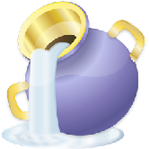
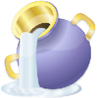
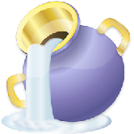

Carissimo visitatore,

Carissimo visitatore,

Carissimo visitatore,

la pagina che cercavi non c'è (forse ho messo un link sbagliato, scusami).
Puoi tornare indietro, oppure puoi andare alla mia pagina principale cliccando qui.
Grazie, Laura